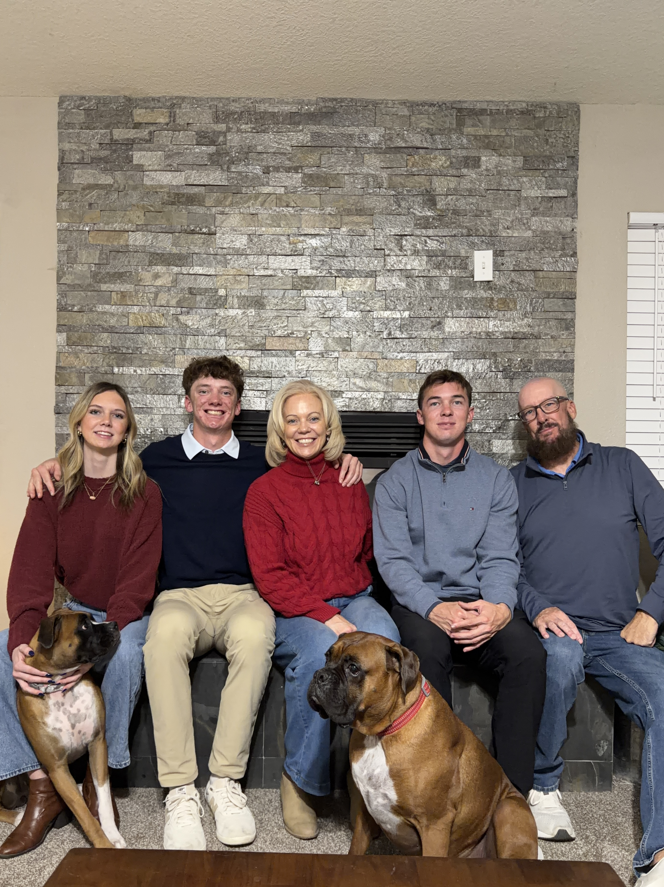

About Me
I am a junior at the Eller College of Management at the University of Arizona, pursuing a degree in Business Analytics with an expected graduation in Fall 2027. My academic and professional focus is working with complex datasets and turning them into clear, actionable results that help organizations make better, more data-driven decisions faster. I am an analytical and results-oriented individual who has always had a passion for numbers, data, math, and technology. I am drawn to analytics and business intelligence roles where structured thinking, collaboration, and a results-driven mindset are the norm. Whether I am building a data model, structuring a business case, or coordinating a team project, I bring a combination of analytical rigor and interpersonal energy that tends to move things forward. Peers and colleagues consistently describe me as calm under pressure and a natural leader — I am the type of person who steps up when it matters most. I thrive in high-performance, team-oriented environments and am particularly excited about opportunities in San Diego, where I plan to build my career. I am actively seeking internship or entry-level roles in analytics, business intelligence, or data-driven consulting where I can contribute immediately while continuing to grow.

Currently, I work at the Golf Club at Dove Mountain, where I have been part of the team for four years. In this role, I support daily operations and deliver excellent service to guests in a fast-paced environment. The experience has sharpened my communication and leadership skills in ways the classroom can't replicate — and managing a part-time job alongside a full course load has built the time management and adaptability that I carry into everything I do.
On the Course
I have been playing golf ever since I was a little kid. Golf is my time to relax and where I reset. Whether I'm playing a casual round with friends or competing, the course is where I sharpen my focus and my patience — two things that I carry directly into how I work.

Always Exploring
Traveling is one of my favorite things to do. It pushes me outside my comfort zone and gives me a perspective that I cannot get in the classroom. Every new place teaches me something about people, culture, and the world I want to work in.

The People Around Me
At the end of the day, the people in my life are what drive me. My friends and family keep me grounded, motivated, and remind me why I'm working toward the goals I have.
Why San Diego

My goal after college is simple — I want to live in San Diego. It's not just where I want to work; it's where I want to build my life. San Diego's outdoor culture matches who I am. I love the weather, the coast, the beach, and the active lifestyle. I've been visiting since I was a kid, and every single time I leave, I know it's where I belong.
Beyond the lifestyle, San Diego is a city with real opportunity. Its growing tech and biotech scene, alongside a strong financial services sector, means there is genuine demand for analytics and BI talent. I see it as a place where my skills fit and where I can grow. That combination — a city I love and a market that needs what I bring — is exactly why San Diego is the destination.